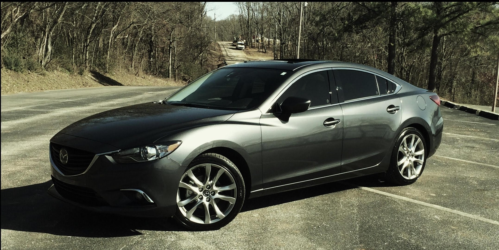
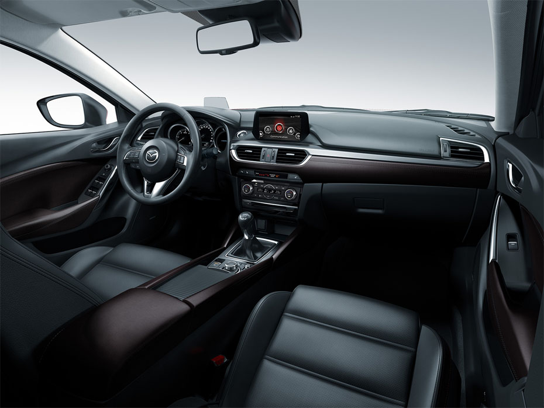

Mazda 6


SPECIFICATIONS:
ENGINE AND ELECTRICAL
- ENGINE TYPE - Skyactiv-G 2.5l
- HORSEPOWER - 184@5700 rpm
- TORQUE - 185@3250 rpm
- DISPLACEMENT - 2488
- COMPRESSION RATIO - 13.0:1
- FUEL SYSTEM - Direct injection
- RECOMMENDED FUEL - Regular unleaded gasoline
- VALVETRAIN - Chain driven dual overhead cams
- ENGINE BLOCK - Alluminium alloy
- CYLLINDER HEAD - Alluminium alloy
- ENGINE BLOCK - Alluminium alloy
DRIVETRAIN
- TYPE - Front-wheel drive (FWD)
- MANUAL TRANSMISSION - SKYACTIV-MT 6-speed
- AUTOMATIC TRANSMISSION - SKYACTIV-Drive 6-speed Sport automatic transmission with manual shift mode